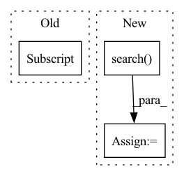

Pattern ID :38423
Before Change
pattern = os.path.join(output_directory, "pretrain_state_*.pt")
paths = glob.glob(pattern)
paths.sort()
if not paths == 0 or len(paths) == 1 and "init" in paths[0] :
raise FileNotFoundError("Could not find valid pretrain state file in {}".format(output_directory))
else:
return paths[-1]After Change
pattern = re.compile("pretrain_state_(\d{4}).pt")
paths_by_epoch = dict()
for path in paths:
match = pattern.search( path)
if match:
paths_by_epoch[match.group(1)] = path
if len(paths_by_epoch) == 0:In pattern: SUPERPATTERN
Frequency: 4
Non-data size: 3
Instances Fragment ID: 109739881
Project Name: sungnyun/understanding-cdfsl
Commit Name: aa94f9f7024b4379014c461bc968897a5b8b86dc
Time: 2021-12-27
Author: itsnamgyu@gmail.com
File Name: paths.py
M Class Name: AnonimousClass
N Class Name: AnonimousClass
M Method Name: get_final_pretrain_state_path(1)
N Method Name: get_final_pretrain_state_path(1)
M Parent Class:
N Parent Class:
M File Name: paths.py
N File Name: paths.py
M Start Line: 78
M End Line: 85
N Start Line: 79
N End Line: 92
Before Change
if precedent.start > supra.end:
break
pet = precedent_breakup[precedent][0] .split(" and ")[0]
res = precedent_breakup[precedent][1].split(" and ")[0]
supra_text = supra_text.replace("(", "\(").replace(")", "\)")After Change
precedent_text = re.sub(" +", "", precedent.text)
supra_text = supra_text.replace("(", "\(").replace(")", "\)")
match = re.search( supra_text, precedent_text, re.IGNORECASE)
if match:
matches.append(precedent)
if len(matches) > 0: Fragment ID: 109739868
Project Name: opennyai/opennyai
Commit Name: e6c2979cb1f043eb698a47cfb61c8f94e1aff141
Time: 2022-12-07
Author: astha99agarwal@gmail.com
File Name: opennyai/ner/InLegalNER/postprocessing_utils.py
M Class Name: AnonimousClass
N Class Name: AnonimousClass
M Method Name: get_precedent_supras(5)
N Method Name: get_precedent_supras(5)
M Parent Class:
N Parent Class:
M File Name: opennyai/ner/InLegalNER/postprocessing_utils.py
N File Name: opennyai/ner/InLegalNER/postprocessing_utils.py
M Start Line: 50
M End Line: 88
N Start Line: 106
N End Line: 131
Before Change
for item in line:
idx = item.id
distance = item.distance
text = id2corpus[idx]
print(text, distance)
list_data.append([query_text, text, distance])
df = pd.DataFrame(list_data, columns=["query_text", "text", "distance"])
df = df.sort_values(by="distance", ascending=True)After Change
def search_in_milvus(embeddings, query_text):
recall_client = RecallByMilvus()
start_time = time.time()
results = recall_client.search( embeddings,
embedding_name,
collection_name,
partition_names=[partition_tag],
output_fields=["pk", "question", "answer"])
end_time = time.time()
print("Search milvus time cost is {} seconds ".format(end_time -
start_time))
list_data = [] Fragment ID: 109739872
Project Name: paddlepaddle/paddlenlp
Commit Name: 0f464e8303f1892948b83541d0ee89e1a616b7a1
Time: 2022-09-15
Author: w5688414@gmail.com
File Name: applications/question_answering/faq_finance/run_system.py
M Class Name: AnonimousClass
N Class Name: AnonimousClass
M Method Name: search_in_milvus(2)
N Method Name: search_in_milvus(2)
M Parent Class:
N Parent Class:
M File Name: applications/question_answering/faq_finance/run_system.py
N File Name: applications/question_answering/faq_finance/run_system.py
M Start Line: 31
M End Line: 53
N Start Line: 46
N End Line: 64
Before Change
for item in line:
idx = item.id
distance = item.distance
text = id2corpus[idx]
list_data.append([query_text, text, distance])
df = pd.DataFrame(list_data, columns=["query_text", "text", "distance"])
df.to_csv("recall_result.csv", index=False)
return dfAfter Change
def search_in_milvus(embeddings, query_text):
recall_client = RecallByMilvus()
start_time = time.time()
results = recall_client.search( embeddings,
embedding_name,
collection_name,
partition_names=[partition_tag],
output_fields=["pk", "text"])
end_time = time.time()
print("Search milvus time cost is {} seconds ".format(end_time -
start_time))
list_data = [] Fragment ID: 109739861
Project Name: paddlepaddle/paddlenlp
Commit Name: 42ec8e31b40e1be77523a224cf66f76b4e1c65b5
Time: 2022-08-15
Author: w5688414@gmail.com
File Name: applications/neural_search/search_system/run_system.py
M Class Name: AnonimousClass
N Class Name: AnonimousClass
M Method Name: search_in_milvus(2)
N Method Name: search_in_milvus(3)
M Parent Class:
N Parent Class:
M File Name: applications/neural_search/search_system/run_system.py
N File Name: applications/neural_search/search_system/run_system.py
M Start Line: 31
M End Line: 47
N Start Line: 33
N End Line: 48